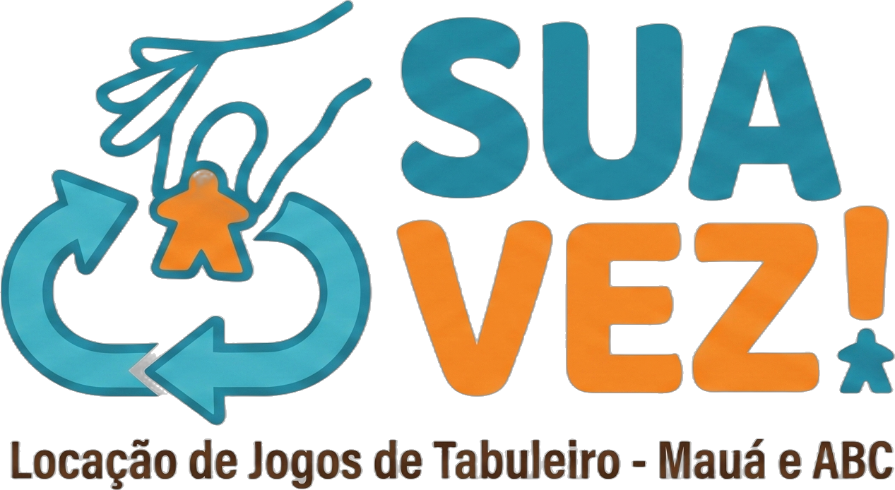
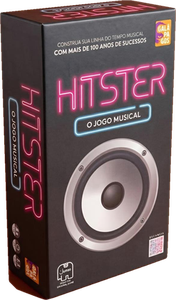
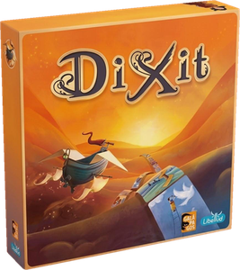
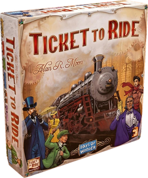
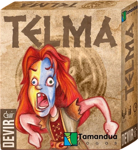
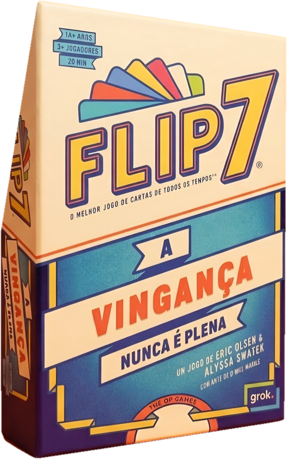
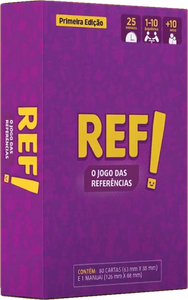

A Sua Vez leva os jogos de tabuleiro, monta as mesas e ensina as regras. O seu café recebe mesas cheias no horário que hoje é mais tranquilo: pode ser à tarde ou à noite.






O café escolhe a opção que preferir, ou as duas. Na opção 2, com 20 pessoas, o café já começa o evento com R$ 300 de consumação garantida. A forma de repasse é combinada antes do evento.
| Início | Chegada, boas-vindas e cada grupo escolhe sua mesa. |
| +15 min | Primeira rodada com jogos rápidos, de 15 a 20 minutos, para todo mundo se soltar. |
| +1 hora | Troca de jogos: a gente indica o próximo para cada mesa, conforme o grupo. |
| +2 horas | Jogos um pouco maiores para quem quiser, e jogos de grupo para quem quiser rir. |
| Fim | Encerramento, foto da turma e anúncio da próxima edição. |
Jogo de tabuleiro moderno faz as pessoas ficarem mais tempo, voltarem com amigos e consumirem ao longo do evento. Com uma data fixa, por exemplo a cada 15 dias, o evento vira hábito e o café passa a ser conhecido como “o lugar dos jogos de tabuleiro”.